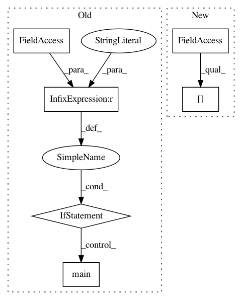

7da1523053f2e5f4fa15c87e019b3244c8653a53,tests/keras/test_constraints.py,,,#,71
Before Change
largest_difference = np.max(np.abs(difference))
assert np.abs(largest_difference) < 10e-5
if __name__ == "__main__":
unittest.main()
After Change
test_values = [0.1, 0.5, 3, 8, 1e-7]
np.random.seed(3537)
example_array = np.random.random((100, 100)) * 100. - 50.
example_array[0, 0] = 0. // 0 could possibly cause trouble
def test_maxnorm():
In pattern: SUPERPATTERN
Frequency: 3
Non-data size: 6
Instances
Project Name: keras-team/keras
Commit Name: 7da1523053f2e5f4fa15c87e019b3244c8653a53
Time: 2015-12-09
Author: francois.chollet@gmail.com
File Name: tests/keras/test_constraints.py
Class Name:
Method Name:
Project Name: streamlit/streamlit
Commit Name: 772408221d033580e71d91c95028f816a6b32ad5
Time: 2019-02-04
Author: thiagot@gmail.com
File Name: lib/tests/streamlit/Proxy/proxy_util_test.py
Class Name:
Method Name:
Project Name: asyml/texar
Commit Name: ae77fce0cdc5be8f4b1fd4cb551df8aa3105b2ab
Time: 2018-08-15
Author: zhitinghu@gmail.com
File Name: texar/data/embedding_test.py
Class Name:
Method Name: